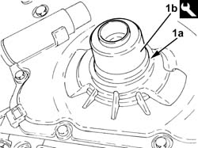
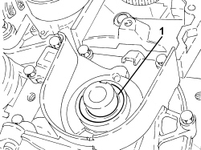
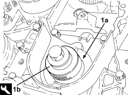
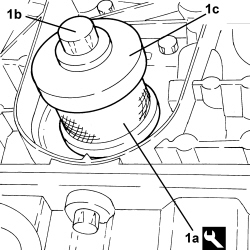

1020D18 FRONT CRANKSHAFT COVER OIL SEAL - R.R.
- Path
- Procedures > 10 ENGINE > 1020 CRANKCASE SUMP AND COVERS > 1020D OIL SEALS ON CRANKSHAFT > 1020D18 FRONT CRANKSHAFT COVER OIL SEAL - R.R.
- Kind
- repair procedure (removal / refitting; the operation number is the code)
- Applies to
- all engines; all production periods
- Interactive page
- https://sloeber94.github.io/elrnDB-fCrm/en/#/194000257
Applies to: engines: 2.2; all production periods
 Removing
Removing
 Refitting
Refitting- Position the vehicle on a lift.
Op. 4450B04 RIGHT FRONT WHEEL - R.R
Op. 7055B66 ENGINE COMPARTMENT DUST COVER IN RIGHT FRONT WHEEL ARCH - R.R.
Op. 1092G10 SINGLE ENGINE BELT - R.R
Op. 1092A10 CRANKSHAFT PULLEY - R + R
- Release and remove the oil seal from the front crankshaft cover.
Applies to: engines: 2.2; all production periods
Refitting
Removing1. Fit a new oil seal (1a) on the crankshaft front cover using the tool (1b).
Tool | Description | Function | Validity |
|---|---|---|---|
1860099000 | Fitting tool | Fitting flywheel side oil seal | 2.2 |

Applies to: engines: 2.2; all production periods
Op. 1092A10 CRANKSHAFT PULLEY - R + R
Op. 1092G10 SINGLE ENGINE BELT - R.R
Op. 7055B66 ENGINE COMPARTMENT DUST COVER IN RIGHT FRONT WHEEL ARCH - R.R.
Op. 4450B04 RIGHT FRONT WHEEL - R.R
- Remove the vehicle from the lift.
Applies to: engines: 1.9 JTD 8v, 1.9 JTD 16v; all production periods
Removing
Refitting- Position the vehicle on a lift.
Op. 1016A10 SOUND-PROOFING COVER - R.R
Op. 1048A50 TURBOCHARGER AIR INTAKE PIPE - R.R.
Op. 1084A16 OIL DIPSTICK PIPE - R.R
Op. 4450B04 RIGHT FRONT WHEEL - R.R
Op. 7055B66 ENGINE COMPARTMENT DUST COVER IN RIGHT FRONT WHEEL ARCH - R.R.
Op. 7055B91 RIGHT FRONT WHEEL ARCH LINER - R.R.
Op. 4410D16 BRACKET (ONE) RETAINING CHASSIS TO BODY - R R
Op. 1092G10 SINGLE ENGINE BELT - R.R
Op. 1092A10 CRANKSHAFT PULLEY - R + R
Op. 1032B10 TOOTHED TIMING BELT - R + R FOR TIMING ADJUSTMENT OR REPLACEMENT
Op. 1032B44 TOOTHED DRIVE PULLEY - R + R WITH TIMING BELT REMOVED
1. Release and remove the crankshaft front oil seal cover.

Applies to: engines: 1.9 JTD 8v, 1.9 JTD 16v; all production periods
Refitting
Removing1. Fit a new the crankshaft front cover oil seal (1a) in the housing using the tool (1b).
Tool | Description | Function | Validity |
|---|---|---|---|
1871000500 | Fitting tool | Fitting crankshaft front oil seal | 1.9 JTD 8V 1.9 JTD 16V |

Applies to: engines: 1.9 JTD 8v, 1.9 JTD 16v; all production periods
Op. 1032B44 TOOTHED DRIVE PULLEY - R + R WITH TIMING BELT REMOVED
Op. 1032B10 TOOTHED TIMING BELT - R + R FOR TIMING ADJUSTMENT OR REPLACEMENT
Op. 1092A10 CRANKSHAFT PULLEY - R + R
Op. 1092G10 SINGLE ENGINE BELT - R.R
Op. 4410D16 BRACKET (ONE) RETAINING CHASSIS TO BODY - R R
Op. 7055B91 RIGHT FRONT WHEEL ARCH LINER - R.R.
Op. 7055B66 ENGINE COMPARTMENT DUST COVER IN RIGHT FRONT WHEEL ARCH - R.R.
Op. 4450B04 RIGHT FRONT WHEEL - R.R
Op. 1084A16 OIL DIPSTICK PIPE - R.R
Op. 1048A50 TURBOCHARGER AIR INTAKE PIPE - R.R.
Op. 1016A10 SOUND-PROOFING COVER - R.R
- Remove the vehicle from the lift.
Applies to: engines: 2.4 JTD 20v; all production periods
- On this version it is not possible to remove/refit the crankshaft oil seal front cover on the car.
To perform this operation, remove/refit the power unit
Op. 1004B14 POWER UNIT WITH AUTOMATIC TRANSMISSION R + R
and then work at the bench, customising the engine service procedures for this operation.
Applies to: engines: 1.8; all production periods
Removing
RefittingOp. 1032B44 TOOTHED DRIVE PULLEY - R + R WITH TIMING BELT REMOVED
- Release the oil seal and remove it taking care not to damage the housing.
Applies to: engines: 1.8; all production periods
Refitting
Removing- Lubricate the new oil seal with (white) silicon grease.
1. Using the tool (1a), the bolt (1b) and the washer (1c) for the auxiliary pulley, fit a new oil seal on the crankshaft front cover.
Tool | Description | Function | Validity |
|---|---|---|---|
2000004100 | Fitting tool | Fitting crankshaft front oil seal | 1.8 |

Topics linked from this page (12)
- 1004B14 POWER UNIT WITH AUTOMATIC TRANSMISSION R + R
- 1016A10 SOUND-PROOFING COVER - R.R
- 1032B10 TOOTHED TIMING BELT - R + R FOR TIMING ADJUSTMENT OR REPLACEMENT
- 1032B44 TOOTHED DRIVE PULLEY - R + R WITH TIMING BELT REMOVED
- 1048A50 TURBOCHARGER AIR INTAKE PIPE - R.R.
- 1084A16 OIL DIPSTICK PIPE - R.R
- 1092A10 CRANKSHAFT PULLEY - R + R
- 1092G10 SINGLE ENGINE BELT - R.R
- 4410D16 BRACKET (ONE) RETAINING CHASSIS TO BODY - R R
- 4450B04 RIGHT FRONT WHEEL - R.R
- 7055B66 ENGINE COMPARTMENT DUST COVER IN RIGHT FRONT WHEEL ARCH - R.R.
- 7055B91 RIGHT FRONT WHEEL ARCH LINER - R.R.